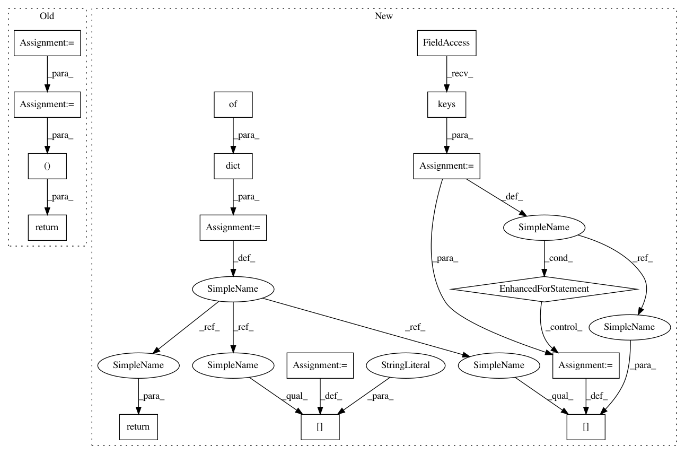

348b4a63399972a0276d4a7d2beb0cdf191da5d4,python/baseline/dy/lm/model.py,CharCompLanguageModel,make_input,#CharCompLanguageModel#Any#,108
Before Change
def make_input(self, batch_dict, **kwargs):
x = batch_dict["x"].T
xch = batch_dict["xch"]
// Change characters from [B, Ts, Tw] to [Ts, Tw, B] for easy lookup
xch = np.transpose(xch, (1, 2, 0))
y = batch_dict["y"].T
return (x, xch), y
def _create_char_comp(self, filtsz, cmotsz, cdsz, gate, num_gate, max_feat=200, nfeat_factor=None):
if nfeat_factor is not None:
cmotsz = [min(nfeat_factor * fsz, max_feat) for fsz in filtsz]
After Change
return embed
def make_input(self, batch_dict):
example_dict = dict({})
for key in self.embeddings.keys():
example_dict[key] = batch_dict[key].T
y = batch_dict.get("y")
if y is not None:
example_dict["y"] = y.T
return example_dict
def output(self, input_):
return [self._output(x) for x in input_]
In pattern: SUPERPATTERN
Frequency: 3
Non-data size: 16
Instances
Project Name: dpressel/mead-baseline
Commit Name: 348b4a63399972a0276d4a7d2beb0cdf191da5d4
Time: 2018-09-30
Author: dpressel@gmail.com
File Name: python/baseline/dy/lm/model.py
Class Name: CharCompLanguageModel
Method Name: make_input
Project Name: dpressel/mead-baseline
Commit Name: 7a4f4148317f7274c0c88095c037e93f95b1d00d
Time: 2018-09-25
Author: dpressel@gmail.com
File Name: python/baseline/pytorch/lm/model.py
Class Name: AbstractLanguageModel
Method Name: make_input
Project Name: dpressel/mead-baseline
Commit Name: 2eb4c5f77bd8da9b1e23851b0acb84543e442953
Time: 2018-09-24
Author: dpressel@gmail.com
File Name: python/baseline/pytorch/classify/model.py
Class Name: WordClassifierModelBase
Method Name: make_input
Project Name: dpressel/mead-baseline
Commit Name: 348b4a63399972a0276d4a7d2beb0cdf191da5d4
Time: 2018-09-30
Author: dpressel@gmail.com
File Name: python/baseline/dy/lm/model.py
Class Name: CharCompLanguageModel
Method Name: make_input